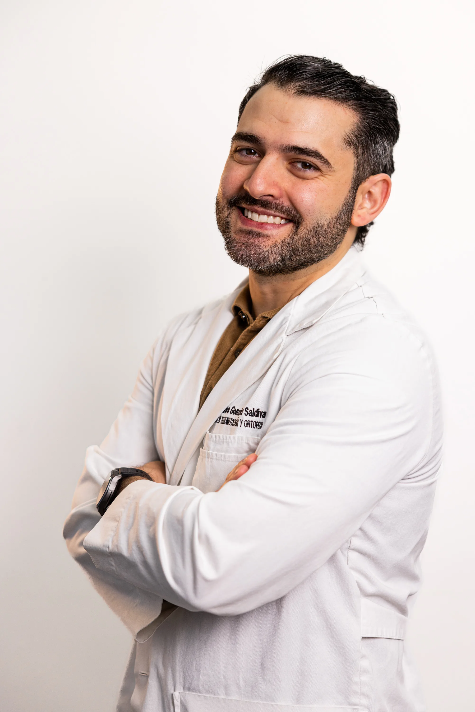

Elige la Modalidad que más te Convenga
Ya sea que estés en Monterrey o en otra ciudad de México, podemos evaluar tu caso con la misma profundidad clínica.
Consulta Presencial
Evaluación clínica completa en consultorio. El Dr. González Saldívar realiza exploración física, revisa tus estudios de imagen en pantalla y discute el caso contigo y tu familia en detalle.
- Exploración física directa
- Revisión de imagen en alta resolución
- Discusión con familiares incluida
- Disponible en Monterrey Sur, San Pedro y Zona Tec
Videoconsulta
Ideal para pacientes fuera de Monterrey o con dificultad para desplazarse. Misma calidad de evaluación clínica, con revisión previa de todos tus estudios y documentos médicos.
- Disponible desde cualquier ciudad de México
- Plataforma segura y confidencial
- Envía estudios previo a la cita por WhatsApp
- Reporte escrito enviado al finalizar
¿Qué Obtienes con la Segunda Opinión?
Revisión Independiente
Análisis completo de tus estudios de imagen (TAC, RMN, gammagrama) y reporte de patología sin influencia del diagnóstico previo.
Evaluación del Plan de Tratamiento
Verificación de si la cirugía propuesta (amputación, resección, endoprótesis) es la más indicada o si existen alternativas más conservadoras.
Reporte Escrito
Documento firmado con la evaluación, diagnóstico y recomendación de tratamiento del Dr. González Saldívar. Útil para gestión con seguros.
Orientación sobre Próximos Pasos
Indicación clara de qué estudio adicional se necesita, qué especialistas complementar y cuándo la intervención es urgente.
Considera una segunda opinión si…
- ✓Te recomendaron biopsia, cirugía, amputación, prótesis o radioterapia.
- ✓No te explicaron claramente el diagnóstico o el siguiente paso.
- ✓Tus estudios mencionan "lesión lítica", "tumor", "masa", "metástasis" o "sarcoma".
- ✓Quieres confirmar si tu caso puede tratarse en Monterrey.
- ✓Buscas entender riesgos, alternativas y siguientes pasos antes de decidir.
Para tu segunda opinión, ten listos: resonancia magnética, tomografía, radiografías, reporte de biopsia o patología, estudios de laboratorio y nota médica previa.
Enviar estudios por WhatsApp 24/7Cómo Solicitar tu Segunda Opinión
Contáctanos por WhatsApp o Teléfono
Cuéntanos brevemente tu situación. Indicamos qué estudios y documentos necesitamos antes de la cita.
Envía tus Estudios
TAC, RMN, gammagrama, reportes de patología y nota médica previa. Pueden enviarse por WhatsApp o correo. No es necesario traer placas físicas.
Cita de Segunda Opinión
El Dr. González Saldívar revisa todos los estudios antes de la consulta. La cita se enfoca en discutir el diagnóstico, opciones y dudas — sin prisa.
Reporte Escrito
Recibes un documento escrito con la evaluación, en 24–72 horas si es videoconsulta, o al finalizar la cita presencial.
Una segunda opinión puede cambiarlo todo
En oncología ortopédica, la diferencia entre amputación y preservación del miembro muchas veces depende de quién revisa el caso. No esperes.

Tu especialista en segunda opinión
Dr. Juan Carlos González Saldívar
Ortopedista Oncólogo formado en el INCan. Revisión independiente de diagnóstico y plan de tratamiento de tumores musculoesqueléticos. Sin compromisos — solo una valoración honesta y experta.
Envíanos tus estudios por WhatsApp antes de la cita. Te respondemos el mismo día.
Dudas Comunes
No. Todo médico serio respeta y alienta la segunda opinión, especialmente en oncología. Es un derecho del paciente reconocido por la NOM mexicana. La mayoría de los oncólogos saben que la segunda opinión fortalece la decisión del paciente y aumenta la adherencia al tratamiento. No hay ninguna razón para sentirse mal al solicitarla.
Habitualmente tenemos disponibilidad en 3–7 días hábiles. Para casos urgentes (compresión neurológica, fractura inminente, cirugía programada en menos de 2 semanas) hacemos el máximo esfuerzo para atenderte antes. Comunícalo al contactarnos.
Lo ideal: imágenes digitales en CD o USB (TAC, RMN, gammagrama óseo, PET-CT si existe), reporte de patología (biopsia), nota médica o resumen del tratamiento actual. Si solo tienes algunas cosas, no es impedimento — revisamos lo disponible y te orientamos qué falta.
Depende de la póliza. Muchos seguros cubren consultas de especialidad, incluyendo segundas opiniones. Contamos con carta de admisión y documentación necesaria. También ofrecemos precios de pago directo accesibles. Consulta con tu aseguradora antes de la cita.
Convenios
Tu seguro médico puede cubrir la consulta


Consulta privada disponible · $1,200 MXN primera consulta